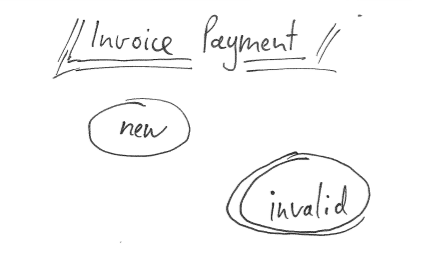

Tutorial: OMS Invoice State Machine
Challenge Description
Build a simple state machine that creates an invoice payment process. Add dummy commands and conditions and integrate it into checkout.
Challenge Solving Highlights
For this challenge, it was asked to create a state machine that models a simplified invoice payment process:
- Create an invoice per order.
- An invoice is represented by a (temporary) file.
- We move to invalid state if creating the invoice fails, otherwise transition into closed.
Bonus-Challenge: You can also include payment and shipment here for completeness.
Getting Started
You can start by drawing your state machine on paper and define it this way. If you don’t know where to start, one hint is to start with these two states:
- new
- invalid
These two states allow you to at least have the starting point (new) and - as you should design for failure - the invalid endpoint state. In your further drawing you can then concentrate on the diverse states you need to go through in your state machine for order processing - aiming for success, to have a happy-path resolution endpoint.

You’ll be able to see the definition of the state machine from the XML document in a graphical representation that can be displayed by your browser. So in your drawing you don’t need to concentrate on a perfectly sketched image, it’s more a high-level modelling of the state machine without the need to fiddle with XML files.
Start drafting your state machine in Invoice01.xml under the config/Zed/oms/ folder. You can use the existing Nopayment01.xml as template.
To activate this new state machine, modify your config:
- Open the configuration file: config/Shared/config_default.php
- Add the state machine Invoice01 to OmsConstants::ACTIVE_PROCESSES
<?php
$config[OmsConstants::ACTIVE_PROCESSES] = [
...
'Invoice01'
];Check the current state machine status in Zed: http://zed.de.demoshop.local/oms/.
Completing the State Machine
We want to create an invoice and simulate that by creating a file in /tmp/orders for example. For this we will need an event “create invoice”.
Afterwards we check that the file exists and if it doesn’t then go to the “invalid state”. The happy case should be the one that confirms that the invoice was created. It should then automatically move to the closed state, our end point. To build such a condition we will need two transitions, one going from “new to “closed”, and one going from “new” to “invalid”. The happy=true is added to the first one.
Check the drafted state machine in Zed to confirm that the state machine now looks as expected.
Adding Command and Condition to the State Machine
We now need to hook in our PHP logic.
...
<events>
...
<event name="create invoice" command="CreateInvoice" manual="true"/>
<transitions>
...
<transition happy="true" condition="IsInvoiceCreated">
<source>new</source>
<target>closed</target>
<event>create invoice</event>
</transition>
<transition>
<source>new</source>
<target>invalid</target>
<event>create invoice</event>
</transition>If you check the drafted state machine in Zed now, it will mark the condition and command as red (“not implemented”).
Implementing Command and Condition
As examples for commands and conditions, a few dummy ones have been provided in Spryker\Zed\DummyPayment\Communication\Plugin\Oms\ namespace.
Let’s implement the same CommandByOrderInterface interface.
The invoice creation is faked by creating a file on disk to have a verifiable action. It merely consists of some file-system and error-handling code finally touching the file on disk:
<?php
namespace Pyz\Zed\Sales\Communication\Plugin\Oms\Command;
use Orm\Zed\Sales\Persistence\SpySalesOrder;
use RuntimeException;
use Spryker\Zed\Oms\Business\Util\ReadOnlyArrayObject;
use Spryker\Zed\Oms\Communication\Plugin\Oms\Command\CommandByOrderInterface;
class CreateInvoiceCommand implements CommandByOrderInterface
{
/**
* ...
*
* @return array
*/
public function run(array $orderItems, SpySalesOrder $orderEntity, ReadOnlyArrayObject $data)
{
/* create a fake invoice file */
$base = sys_get_temp_dir();
if (!strlen($base)) {
throw new RuntimeException('Unable to obtain order base store folder (faked in tempdir)');
}
$dir = sprintf('%s/orders', $base);
if (!is_readable($dir) && !mkdir($dir)) {
throw new RuntimeException('Unable to establish order store folder');
}
$path = sprintf('%s/invoice-order-%d', $dir, $orderEntity->getIdSalesOrder());
touch($path);
return [];
}
}As shown, only the single run() method needs to be implemented to add actual operations within the state machine. By using the temporary directory, the operation is at least persisted until reboot so can be checked by condition.
Similar to commands, conditions are implementing Spryker\Zed\Oms\Communication\Plugin\Oms\Condition\ConditionInterface, so does the Pyz\Zed\Invoice\Communication\Plugin\Oms\Condition\IsInvoiceCreatedCondition. It comes to life by implementing the check() method:
<?php
namespace Pyz\Zed\Sales\Communication\Plugin\Oms\Condition;
use Orm\Zed\Sales\Persistence\SpySalesOrderItem;
use Spryker\Zed\Oms\Communication\Plugin\Oms\Condition\ConditionInterface;
class IsInvoiceCreatedCondition implements ConditionInterface
{
/**
* @param SpySalesOrderItem $orderItem
*
* @return bool
*/
public function check(SpySalesOrderItem $orderItem)
{
$orderEntity = $orderItem->getOrder();
$path = sprintf('%s/orders/invoice-order-%d', sys_get_temp_dir(), $orderEntity->getIdSalesOrder());
return is_readable($path);
}
}A rather straight forward check for file existence.
This check on success (return boolean true) will immediately trigger the next state, otherwise transition into the invalid state.
Enable the new Condition and Command
You need to hook in the new classes in your OmsDependencyProvider.
<?php
namespace Pyz\Zed\Oms;
use Pyz\Zed\Sales\Communication\Plugin\Oms\Command\CreateInvoiceCommand;
use Pyz\Zed\Sales\Communication\Plugin\Oms\Condition\IsInvoiceCreatedCondition;
use Spryker\Zed\Kernel\Container;
use Spryker\Zed\Oms\OmsDependencyProvider as SprykerOmsDependencyProvider;
class OmsDependencyProvider extends SprykerOmsDependencyProvider
{
/**
* @param \Spryker\Zed\Kernel\Container $container
*
* @return \Spryker\Zed\Kernel\Container
*/
public function provideBusinessLayerDependencies(Container $container)
{
$container = parent::provideBusinessLayerDependencies($container);
$container->extend(self::COMMAND_PLUGINS, function (CommandCollectionInterface $commandCollection) {
$commandCollection->add(new CreateInvoiceCommand(), 'CreateInvoice');
return $commandCollection;
});
$container->extend(self::CONDITION_PLUGINS, function (ConditionCollectionInterface $conditionCollection) {
$conditionCollection->add(new IsInvoiceCreatedCondition(), 'IsInvoiceCreated');
return $conditionCollection;
});
return $container;
}
}The drafted state machine should now not contain any red warnings anymore.
Initialize the State Machine for Every New Order in Checkout
- Open the configuration file: config/Shared/config_default.php
<?php
$config[SalesConstants::PAYMENT_METHOD_STATEMACHINE_MAPPING] = [
DummyPaymentConfig::PAYMENT_METHOD_INVOICE => 'Invoice01',
...
];The next time you check out with the “Invoice” payment type, the new Invoice01 state machine will be used.
Testing the State Machine
Check the Sales backend, click “create invoice” and see how the order will move into the closed state, also see the transition log in the detail view.
The implementation of the command can then be easily tested by checking the /tmp/orders/ folder on the VM after placing the order:
ls -l /tmp/orders
==================
-rw-r--r-- 1 www-data www-data 0 Apr 24 13:58 invoice-order-5
-rw-r--r-- 1 www-data www-data 0 Apr 24 14:07 invoice-order-6
-rw-r--r-- 1 www-data www-data 0 Apr 24 14:09 invoice-order-7
-rw-r--r-- 1 www-data www-data 0 Apr 24 14:11 invoice-order-8Et voilá, let the orders flow in. Each order will give you a new invoice (if the correct payment has been chosen) with this example of state machine.
Tips and Tweaks
You can add onEnter="true" to the “create invoice” event if you want it to automatically create the invoice as soon as the checkout completes. This way no additional click in the backend will be necessary anymore.
Also, you can return hard-coded false in the condition to check if moving to “invalid” works, as well.
References
| Documentation | Description |
|---|---|
|
Order Management System Concepts |
|
|
State Machine - The Cook Book |